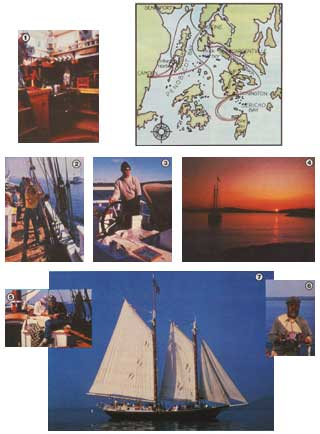

Restoring The Stephen Taber, Aboard A Windjammer
A weeklong diary of travel on a wind powered boat.
By the Mother Earth News editors
May/June 1983
A century ago, majestic schooners dotted this country's coastal waters, carrying cargo up and down the northeastern seaboard. Today, of course, most of the powerful clipper ships are gone (or relegated to museum moorings) . . . and with them has disappeared a unique lifestyle.
From the sheltered harbors of Maine, however, a number of two-masted schooners still set sail as they did in that earlier era . . . although their cargos of pulpwood have long since been replaced by companies of passengers.
The Stephen Taber, owned and operated by Ken and Ellen Barnes, is the oldest of the 12 schooners in the Maine Windjammer Fleet (the Taber has never missed a season in her 112 years of service). Originally designed to haul brick on the Hudson River, she now plies the sea along the rugged Maine coast, taking adventuresome folks on week-long sailing excursions from June through September.
Last summer, staffer Emily Stetson had an opportunity to sign on for a week's cruise with the crew of the Stephen Taber, and to experience this vacation alternative firsthand. The following article is taken from her log of that trip.
MONDAY
I was up at 6:30 this morning . . . anticipation of the week ahead making me bolt out of bed like a kid on Christmas Day. Climbing up on deck (from the cozy cabin that I would be sharing with three other women), I discovered that I wasn't the only one eager to begin sailing! A few of my shipmates were already washing their faces in basins of salt water, while others-clad in light jackets against the cool of the Maine dawn-were gathered around the galley hatch, sipping mugs of steaming coffee. The sun was just creeping above the trees on shore, and the only movement on the water of Camden Harbor was the mirrored flight of a gull overhead.
And, although I was still rubbing sleep from my eyes, it was obvious that the crew had long been awake. Mike (our first mate) and Judy (the deckhand) were scrubbing down the deck, and-as I could tell from the aroma of frying bacon and the smoke from the woodstove-the ship's cook (and co-owner) Ellen was fixing breakfast in the main galley.
At 8:00 a.m. Janet, the mess (or assistant) cook, rang the Taber's brass bell, and the ship's company piled into the galley. The pine tables' drop leaves swung up to accommodate all 22 of us, and-with kerosene lanterns rocking from the beams and old pictures of the schooner hanging on the walls-we ate a lavish meal of bacon and blueberry pancakes (with Maine blueberries, of course) drenched in real maple syrup.
Then, after stowing the week's supply of groceries on board and taking one last stroll through the 200-year-old village of Camden, we hoisted the anchor and got under way. The Taber's yawl boat (an inboard work craft) towed us out of the harbor, and once in the clear, we set sail. It took two teams-each consisting of five or six of us heaving on a halyard -to raise the canvas sails: first the mainsail, then the foresail, the jumbo, and the jib. A .porpoise greeted us as we reached open water, 'and-looking back-we could see Mt. Battie dooming up behind Camden. We were off!
Our course for the week would be deter mined solely by the wind and the tide . . . so today, with just a wisp of a breeze from the southwest, we slowly headed northeast through Penobscot Bay. Except for the lack of wind, the weather was beautiful. Most of us enjoyed simply sunning on the deck and taking in the ocean scenery, while others read, knitted, or played guitars and recorders (there's quite a variety of instruments on board). We're a diverse company, ranging in age from the early 20's to 85, representing all sorts of occupations, and including both native Mainers and folks from as far away as Alabama, Iowa, and even Australia!
We sailed into Buck Harbor about 5:00 p.m., and after lowering the anchor and furling the sails, a few of us took a swim (it was short, though . . . Maine's coastal water is cold). Then, as if that full day of wind and weather hadn't been inspiring enough, later in the evening white bands of light streamed skyward from the horizon, as though shining from a thousand searchlights. The spectacle was the northern lights-the aurora borealis-a phenomenon believed to be caused by electrical discharges in the ionized air. We stood in awe on the quarter-deck, sharing that special half-hour show.
TUESDAY
It was a brisk, cloudless morning when I climbed on deck at 7:00. And I soon found that the chill air made washing the breakfast dishes into a coveted chore, since helping with this task was our only opportunity to dunk our hands in hot water.
The wind was out of the north at 15-25 knots (nautical miles per hour), as we charted our course along the Eggemoggin Reach. When we neared Sargentville (taking turns at the helm), our first mate climbed the rigging and lowered the topmast, so that we could pass under a bridge. The wind shifted to the northeast, then, and we had a steady breeze as we scudded around Deer Isle and down into Jericho Bay. It was a glorious day for sailing. Yesterday's shorts and T-shirts were replaced by wool hats and sweaters, and the morning hours slipped by as we coiled the halyards and kept the sails taut. Out here, at one with the wind, with the sun on my face and a taste of salt spray on my lipsfar away from telephones and day-to-day pressures-I felt wonderfully invigorated.
We were warming up with a lunch of hot fish chowder as the schooner passed the seaport of Stonington, known for its fishing fleets and granite quarries. In late afternoon the lighthouse at the Isle au Haut came into view, and we motored into the harbor to drop anchor for the night.
Acadia National Park covers much of this island, and as we hiked along the trails (getting our "land legs" back again), I was struck by the beauty and peacefulness of this remote spot. White clapboard houses lined the single paved road, each boasting a thriving garden and a pile of lobster traps . . . and it seemed from the few cars we saw-all of 1960's vintage-that the latest fads of mainland life weren't needed (or wanted) here.
We boarded the schooner after an hour or two, and some of my shipmates took their first plunge in the ocean (encouraged by those of us who stayed on deck, of course!). Another schooner, the Sylvina W. Beal, had found this hideaway, too, and was anchored beside us. After dinner the two captains led us in a rousing songfest, as they took turns on the guitar. My evening ended after a round of cribbage with two new friends in the aft galley, as the warmth from the fire in the old potbellied Franklin stove sent me sleepily to my bunk.
WEDNESDAY
When I woke this morning and glanced at my three (still-sleeping) cabin mates, I found it actually difficult to imagine not being on the Stephen Taber. The routine of opening the hatch to a cool Down East breeze, splashing salt water on my face, and sipping a mug of freshly brewed coffee as I studied the wind and weather, seemed to have quickly become an important part of my life. Moreover, the sunburned faces gathered round the breakfast table were no longer strangers . . . in fact, none of us was spared the good-natured kidding of our shipmates!
The day had dawned sunny, brisk, and clear, with a zephyr out of the northeast that soon picked up to a gusty 15 knots, as we tacked through east Penobscot Bay. My morning activities included taking a turn at the helm and getting a lesson in deck repair from Ken. The pursuits of the rest of the crew were as diverse as the group itself, ranging from impromptu musical gatherings, to rope tying, to simply curling up in a coiled halyard and watching the waves slap against the bow and the sprucefringed islands slip by.
That afternoon we stopped briefly in picturesque Stonington, strolled the town's fishing docks, and toured tree-bordered streets lined with white and gray clapboard houses, often set off by beautiful flower gardens. Then, after about an hour's sail, we dropped anchor by a small island, which-we soon discovered-was inhabited only by a couple of overturned rowboats nestled back in the woods. We carried our evening's edibles ashore, gathered wood, and harvested fresh seaweed . . . and in no time were savoring a feast of lobster, clams, and corn on the cob, prepared over an open fire. It was a scrumptious repast, which followed by a short jaunt around the tiny island and a breathtaking sunset-made the evening truly memorable. Reluctantly, we left this bit of paradise as night fell . . . and headed back to the schooner.
THURSDAY
There was a bustle of activity on deck when I woke. It appeared that we'd drifted slightly toward shore with the high tide, so we set sail immediately. A southeast breeze soon freshened to a steady 25 knots, and provided the best sailing weather we'd had yet. With the sun sparkling off the white-capped waves, we ran before the wind, passing Deer Isle to the starboard and Eagle Island to the port.
About midmorning I retreated to the main galley to warm my windchilled face, and found Ellen-generously dusted with flour sorting wild Maine blueberries for pie fixings. The warmth of the woodstove and the delicious aroma of freshly baked bread had coaxed a few other folks belowdecks, too . . . and we spent the next hour or two slicing vegetables, polishing brass lanterns, and challenging each other to backgammon matches.
Our arrival in Castine in the early afternoon was quite spectacular, as Ken made a smart dock landing (no small feat with a 68-foot vessel in gusty weather!). Once the Taber was secured and her sails furled, our group dispersed to tour the town.
Set on a point overlooking Penobscot Bay, Castine was an important stronghold during the French and Indian War. We climbed the earthen berms of Fort George, looked at native American artifacts in the Wilson Museum, and studied the photos and models of the Taber's contemporaries on display in the museum at the Maritime Academy.
The evening was spent lingering over a tasty traditional New England boiled dinner (topped off with Ellen's marvelous blueberry pies) . . . singing in the galley . . . imbibing a brew at the harbor's pub . . . and-last but not least!luxuriating in a hot shower at the local inn (which provided a special "water and towel" package for the visiting schooner crews). If ever I've felt real contentment, I felt it this night . . . as I climbed into a snug bed and drifted off to sleep, lulled by the rhythmic creaking of the mooring lines.
FRIDAY
We got under way after 10:00 a.m. today, having taken time for one last stroll through Castine. And, once we'd left the shelter of the harbor, the wind picked up to 10-20 knots, blowing from the southwest. It promised to be another fine sailing day.
The weather remained sunny, warm, and windy, as we made a wide half-circle above Isleboro Island and charted our way past the town of Searsport. Then, on a closehauled course (that is, sailing almost into the wind), we tacked down the coast.
This afternoon's events included an impromptu songfest . . . a lesson in rope lore (including instruction in the art of tying Captain Barnes's "quick splice", which I have yet to figure out!) . . . cranking homemade ice cream . . . and lounging on deck, as salt-laden breezes whipped over us. We'd had a full day of superb sailing by the time we anchored in Gilkey Harbor, just before dusk.
Tonight's sunset was a definite "sailor's delight", spanning the sky with bands of red. And when night fell, Ken and Ellen showed us photographs of their overhauling of the Stephen Taber. (EDITOR'S NOTE: For an indepth look at the restoration, see the accompanying article.)
I lay in my bunk tonight, listening to the sound of water lapping against the schooner and to the soft breathing of my cabin mates. I'd come to cherish the stillness out here, where there are no screeching cars and where not a single man-made light mars the starfilled night sky. Before I fell asleep, I tried to imprint this sense of peacefulness and feeling of total relaxation on my mind, so that even after we docked in Camden the next day-I'd be able to take a bit of my seafaring experience back home with me.
SATURDAY
No breakfast bells rang this morning, but it didn't make much difference to me, because I was up at 6:00 to watch the tail end of the sunrise. The harbor was totally still, and for the first time this week, the sky was hazy.
The dull sky and lack of wind seemed fitting somehow, since this was our last morning on the Taber. One of my shipmates had composed an "anchor" song, which just happened to be about me and my cabin mates, so the four of us rolled up our sleeves and hauled on that cable for the last time. We helped hoist the sails, too, though for a good portion of the morning, the yawl boat was our only source of "going" power.
I took advantage of the stillness of the day to make my sole attempt at climbing the schooner's rigging . . .but about halfway up the rope ladder I decided the view was more than adequate, and scrambled down again. For the remainder of the trip, I was content to stay rooted on deck.
We arrived back in Camden before noon, and a group of us-reluctant to end our experience-stowed our gear on the dock and explored the town for a few hours. Finally, though, we couldn't put off leaving any longer . . . and piled into a car to head out to the airport.
As I flew home, I tried, with difficulty, to pinpoint what was best about the trip . . .only to find that my lasting impression was a combination of many special memories. But, putting aside the natural "lift" one gets from sailing on a majestic vessel that is part of our country's maritime heritage-and being surrounded by the breathtaking beauty of the Maine coast-I was charmed by the camaraderie on the windjammer cruise . . . a kind of closeness that just isn't found during a typical summer "resort" vacation. And, perhaps equally important to me, there was enough space on that expanse of water to get lost in my own thoughts and to touch base with an inner self that so often gets ignored amid the clutter of a "normal" day. This was an adventure that will stay with me . . . at least until I can go ag ain!
EDITOR'S NOTE: If you'd like to find out more about the schooner fleet, write to the Maine Windjammer Association, Dept. TMEN, Box 317P, Rockport, Maine 04856.
Restoring the Stephen Taber
Built in 1871, the Stephen Taber is the oldest documented in-service sailing vessel in the U.S., never having missed a season since her launching. Not surprisingly, though, those years of duty did take a toll. In fact, when Ellen and I purchased the 68 foot schooner in 1979 (having left our home and jobs to begin a new lifestyle of oceangoing in dependence), we knew that a major overhaul would soon be needed. Hairline cracks in the fiberglass layer that had been applied over the old deck had allowed fresh water to seep into the vessel and rot the wood. In addition, the Taber's keel had "hogged" over the years, developing an inward curve, which caused the outer ends of the vessel to flatten. We hoped to restore the integrity of the hull and to return the Taber to the same saucy shape she displayed in 1871 . . . and we aimed to accomplish these tasks without letting her miss even one summer of sailing!
The groundwork for the restoration began immediately. After the close of the 1979 season, 1 spent the winter fashioning the vessel's new ironwork (I'm a blacksmith), and sent it to Boston to be galvanized. Then, during the next winter, suitable oak and pine trees more than 65,000 board feet would be needed -were selected to be cut, sawed, and transported to the North End Shipyard in Rockland, Maine . . . where the wood was organized into piles according to its intended use. During this "off" season, we also collected other materials for the project, including nearly five tons of galvanized steel fastenings, boat spikes, nuts and bolts, and such. Because we were attempting to do in seven months what would normally take more than two years to complete, it was imperative that every tool arid part required be on hand before the reconstruction began.
Starting in the first week of October 1981, we prepared the, schooner for the shipyard. The sails, rigging, and other extraneous gear were stored on sore. Next, detailed sketches were drawn to document the schooner's deck layout, so that we'd know how to put her back together at a later date. That done, the bulkheads (the walls between compartments belowdecks) were ripped out . . , and the stripped vessel was towed, by yawl boat, to Rockland.
At high tide, on October 18, we eased the Taber onto a cradle, which would support her on land, and hauled her up the beach. The masts, cabin houses, and other heavy gear were then removed by a crane.
Once the decks were cleared, we quickly set about building a structure over the entire vessel, since the first snows weren't far off. The ten person work crew (which included Ellen and me) erected a schooner-sized shed in five days.
With a roof over our heads, our next order of business was to remove the decking and the ceiling (the inner hull), thus exposing the frames (the skeleton of the vessel, or what landlubbers call the "ribs'). Any rotted frames were marked and taken out one by one, so that the shape of the hull would remain intact. Several other projects were in progress at the same time . . . replacing the deck beams, the keelson (the inner keel or "backbone'), and the centerboard trunk, to name a few. At times the Taber looked quite helpless and vulnerable, being held together only by a series of braces.
By Christmas, though, she was practically reframed . . . and at the end of another month of hard work (in the dead of winter), the schooner began to look "whole" again. We'd reestablished her original sheer (her shape, as portrayed in circa-1880 photos), and we were shooting for an April launch. (Many of the folks who stopped by to inspect our progress would shake their heads upon hearing that goal . . . but our crew was always willing to cover any bets!)
The crane returned during the first week of April, and our schooner's masts, bowsprit, and rigging (which had been reworked over the winter) were put in place. Finally, at high wile on April 27, the Stephen Taber was returned to the sea!
Our job was far from complete, however. The schooner was sell a shell. . , in need of wiring, plumbing, and cabin accommodations. We returned to Camden, and-with only an awning,on deck to protect us from the weather-set to work with band saws, table saws, and a mass of extension cords. The spring rains stopped to time to allow us to finish the sanding , painting, and var nishing . , and, by June 6, 1982, the Taber was rigged and ready to sail. We left the har bor that Monday with a full complement of passengers, as the schooner embarked on what we hope will be her next 112 years of service!
|
 Ken Barnes |
 |
|